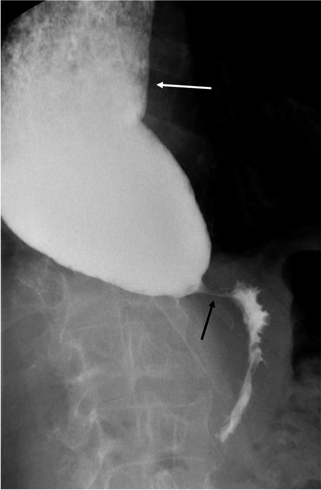
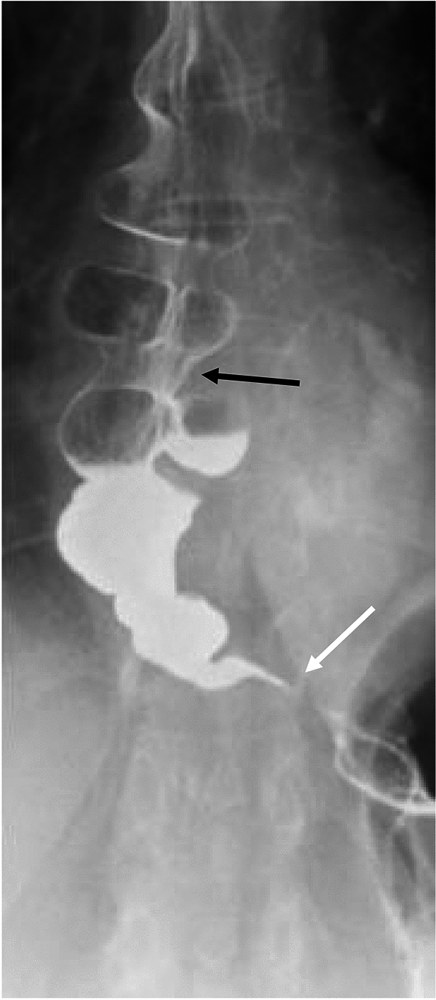

食道弛緩不能症的症狀通常慢慢出現，一開始可能不太明顯，容易被忽略或誤認為其他問題。以下是最常見的症狀：
與其他疾病不同的特點： 一般食道狹窄只影響固體食物，但食道弛緩不能症常常固體和液體都會困難，這是重要的鑑別線索。
| 症狀 | 發生率 | 特徵描述 |
|---|---|---|
| 吞嚥困難（Dysphagia） | > 90% | 固體和液體皆受影響 |
| 食物逆流（Regurgitation） | 60 ~ 90% | 無酸味的未消化食物 |
| 體重減輕（Weight Loss） | 30 ~ 60% | 漸進式，可達數公斤 |
| 胸痛（Chest Pain） | 25 ~ 50% | 進食時或進食後發生 |
| 咳嗽（Cough） | 20 ~ 40% | 夜間較明顯 |
| 燒心感（Heartburn） | 20 ~ 40% | 制酸劑效果不佳 |
如果您有以下情況，建議儘早就醫：
提醒： 食道弛緩不能症的症狀平均要經過 2 ~ 5 年 才被正確診斷。如果您有持續性的吞嚥問題，請主動告知醫師您的完整症狀，有助於縮短診斷時間。
確診食道弛緩不能症通常需要以下幾項檢查：
什麼是這個檢查？ - 喝下含有鋇劑（Barium）的白色液體 - 透過 X 光觀察鋇劑在食道中的流動情形
會看到什麼？ - 典型的「鳥嘴徵象」（Bird-beak Sign）：食道下端像鳥嘴一樣變窄 - 食道上方可能擴張，鋇劑堆積在食道中不易排空 - 嚴重時可見食道明顯擴大，呈現「S 型」或「乙狀結腸樣」（Sigmoid-shaped）外觀
檢查感受： - 無痛、非侵入性 - 約 15 ~ 30 分鐘完成 - 只需喝下鋇劑液體即可

圖：第一型弛緩不能症的鋇劑吞嚥攝影，可見食道擴張及下食道括約肌處的鳥嘴狀外觀 (Bird-beak appearance)。圖片來源：Wienbeck S, et al. Abdominal Radiology. 2024. CC-BY 4.0. 原文：PMC11947050什麼是這個檢查？ - 經由鼻腔放入一條細細的壓力感測管到食道中 - 測量食道各段的壓力變化和蠕動功能
為什麼重要？ - 這是診斷食道弛緩不能症的「黃金標準」（Gold Standard） - 可以精確判斷下食道括約肌是否無法放鬆 - 能區分不同亞型（Subtype），對治療選擇非常重要
檢查感受： - 放管時可能有短暫不適，但多數人可以忍受 - 檢查過程中會請您喝幾口水，觀察吞嚥時的壓力變化 - 全程約 20 ~ 30 分鐘

圖：第三型弛緩不能症的 HRM Clouse Plot，顯示節段性痙攣收縮。圖片來源：Wienbeck S, et al. Abdominal Radiology. 2024. CC-BY 4.0. 原文：PMC11947050什麼是這個檢查？ - 經由口腔將一條帶攝影鏡頭的軟管放入食道和胃 - 直接觀察食道內部的狀況
目的： - 排除其他疾病：如食道癌、食道狹窄等 - 觀察食道是否有發炎、糜爛或食物殘留 - 排除「假性弛緩不能症」（Pseudoachalasia），這可能是腫瘤造成的類似症狀
檢查感受： - 可選擇鎮靜麻醉（Sedation），讓您在睡眠中完成 - 若無鎮靜，可能有噁心感 - 約 10 ~ 20 分鐘完成
當懷疑「假性弛緩不能症」(Pseudoachalasia) 時，醫師可能安排 CT 掃描或內視鏡超音波檢查：
| 檢查項目 | 目的 |
|---|---|
| 胸部 X 光（Chest X-ray） | 初步篩檢，可能看到擴張的食道 |
| 電腦斷層掃描（CT Scan） | 排除腫瘤或其他結構異常 |
| 內視鏡超音波（EUS） | 進一步排除假性弛緩不能症 |
| 定時鋇劑排空測試（Timed Barium Esophagram, TBE） | 評估食道排空功能，也用於治療後追蹤 |
以下是食道弛緩不能症從症狀到確診的典型流程：
flowchart TD
A[出現症狀<br/>吞嚥困難、食物逆流、體重減輕] --> B{持續超過 2 週？}
B -- 是 --> C[就醫：肝膽腸胃科]
B -- 否 --> B2[觀察，若持續則就醫]
B2 --> C
C --> D[初步評估<br/>病史詢問 + 理學檢查]
D --> E[上消化道內視鏡<br/>排除癌症等其他疾病]
E --> F{內視鏡是否發現<br/>其他明確病因？}
F -- 是 --> G[針對該疾病治療]
F -- 否 --> H[鋇劑吞嚥檢查<br/>觀察食道型態與排空]
H --> I{是否有典型<br/>鳥嘴徵象？}
I -- 是 --> J[高解析度食道測壓<br/>確認診斷 + 分型]
I -- 不確定 --> J
J --> K{符合弛緩不能症<br/>診斷標準？}
K -- 是 --> L[確診食道弛緩不能症<br/>並確認亞型]
K -- 否 --> M[考慮其他食道<br/>運動功能障礙]
L --> N[擬定治療計畫]
style A fill:#FFF3E0
style L fill:#E8F5E9
style N fill:#E3F2FD食道弛緩不能症因為症狀不特異，常常被誤認為其他疾病：
| 容易混淆的疾病 | 相似之處 | 如何區分 |
|---|---|---|
| 胃食道逆流（GERD） | 燒心感、逆流 | 弛緩不能症的逆流物無酸味；制酸劑效果不佳 |
| 食道癌（Esophageal Cancer） | 吞嚥困難、體重減輕 | 內視鏡可區分；癌症多影響固體為主 |
| 心臟疾病 | 胸痛 | 心電圖、心臟檢查可排除 |
| 焦慮 / 壓力 | 吞嚥有異物感 | 弛緩不能症有客觀檢查異常 |
| 嗜酸性食道炎（Eosinophilic Esophagitis） | 吞嚥困難 | 內視鏡切片可區分 |
提醒： 如果您被診斷為胃食道逆流但治療效果不好，請考慮要求進一步檢查。
📋 請填入貴院資料：
- 本院負責科別：_______________
- 聯絡電話 / 分機：_______________
- 門診時間：_______________
- 主治醫師：_______________
- 本院特色 / 年手術量：_______________
| 重點 | 說明 |
|---|---|
| 最常見症狀 | 吞嚥困難（固體和液體都受影響） |
| 特色症狀 | 無酸味的食物逆流 |
| 何時就醫 | 吞嚥困難超過 2 週、不明原因體重減輕 |
| 最關鍵的檢查 | 高解析度食道測壓（黃金標準） |
| 必做的檢查 | 內視鏡（排除癌症等其他原因） |